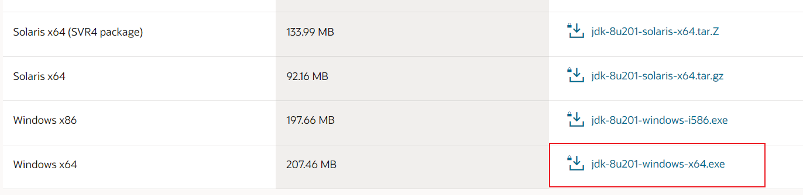
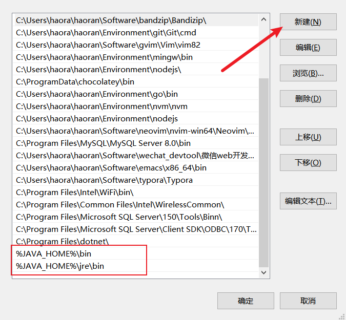
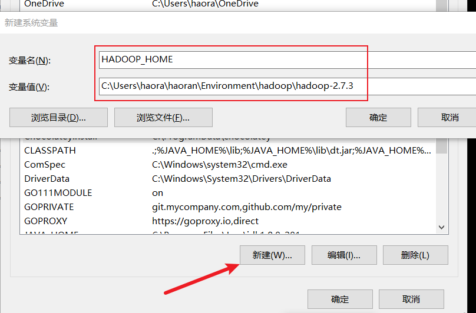
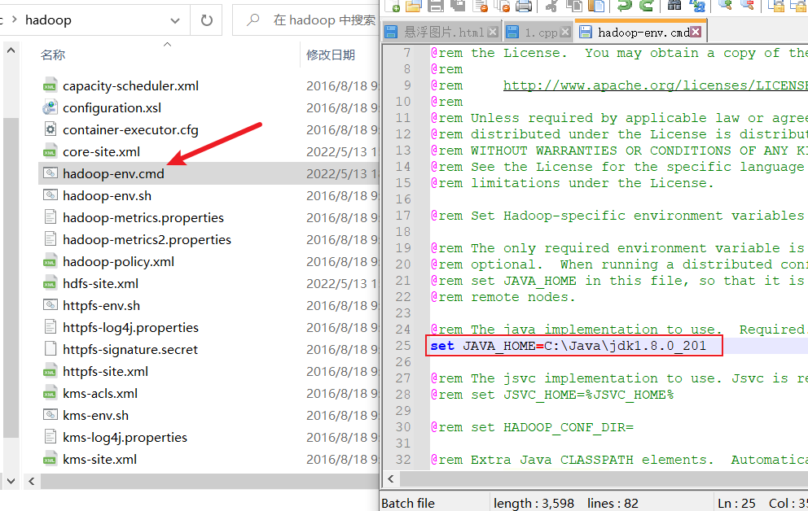

环境
Table of Contents
Windows10 Java8u201
下载 jdk8u201，然后将 jdk 安装到目录 C:\Java。
默认 jdk 会安装在 Program Files 目录下，这个目录名有空格，很不好，建议安装在没有空格、没有中文目录名的目录下。
JAVA_HOME
C:\Java\jdk1.8.0_201
CLASSPATH
.;%JAVA_HOME%\lib;%JAVA_HOME%\lib\dt.jar;%JAVA_HOME%\lib\tools.jar

path_java_home
%JAVA_HOME%\bin %JAVA_HOME%\jre\bin
检验 jdk 是否安装成功
# 命令行运行 java javac java -version
Windows10 Hadoop2.7.3
jdk
- 先下载安装 jdk8u201，要是 64 位的，如果不是 64 位的，在启动资源节点管理器时会出现错误
下载 Hadoop 压缩包
下载 hadoop 到 C:\Users\haora\haoran\Environment\hadoop
http://archive.apache.org/dist/hadoop/ http://archive.apache.org/dist/hadoop/common/hadoop-2.7.3/hadoop-2.7.3.tar.gz
解压 Hadoop 压缩包
下载可以在 Windows 上解压 .tar.gz 压缩包的软件，作者这里使用 wsl 中的 tar 命令解压 hadoop 压缩包
cd C:\Users\haora\haoran\Environment\hadoop tar xzvf hadoop-2.7.3.tar.gz
设置环境变量
HADOOP_HOME
C:\Users\haora\haoran\Environment\hadoop\hadoop-2.7.3
HADOOP_BIN
C:\Users\haora\haoran\Environment\hadoop\hadoop-2.7.3\bin
添加以下目录到 path 变量

编辑 Hadoop 配置文件
新建 data 目录和子目录
- C:\Users\haora\haoran\Environment\hadoop\hadoop-2.7.3\data
- C:\Users\haora\haoran\Environment\hadoop\hadoop-2.7.3\data\namenode
- C:\Users\haora\haoran\Environment\hadoop\hadoop-2.7.3\data\datanode
Hadoop 寻找 jdk
修改 C:\Users\haora\haoran\Environment\hadoop\hadoop-2.7.3\etc\hadoop\hadoop-env.cmd 文件
检查是否配置成功
hadoop version
修改 Hadoop 配置文件
HDFS 服务地址 C:\Users\haora\haoran\Environment\hadoop\hadoop-2.7.3\etc\hadoop\core-site.xml
<configuration> <property> <name>fs.defaultFS</name> <value>hdfs://localhost:9000</value> </property> </configuration>
添加 namenode 和 datanode 目录设置 C:\Users\haora\haoran\Environment\hadoop\hadoop-2.7.3\etc\hadoop\hdfs-site.xml
<configuration> <property> <name>dfs.replication</name> <value>1</value> </property> <property> <name>dfs.namenode.name.dir</name> <value>file:///Users/haora/haoran/Environment/hadoop/hadoop-2.7.3/data/namenode</value> </property> <property> <name>dfs.datanode.data.dir</name> <value>file:///Users/haora/haoran/Environment/hadoop/hadoop-2.7.3/data/datanode</value> </property> </configuration>
框架设置文件 C:\Users\haora\haoran\Environment\hadoop\hadoop-2.7.3\etc\hadoop\mapred-site.xml
第一次配置只有 mapred-site.xml.template，没有 mapred-site.xml，输入以下命令：
sudo cp mapred-site.xml.template mapred-site.xml
<configuration> <property> <name>mapreduce.framework.name</name> <value>yarn</value> </property> </configuration>
Yarn 配置文件 C:\Users\haora\haoran\Environment\hadoop\hadoop-2.7.3\etc\hadoop\yarn-site.xml
<configuration> <property> <name>yarn.resourcemanager.hostname</name> <value>0.0.0.0</value> </property> <property> <name>yarn.nodemanager.local-dirs</name> <value>file:///C:/Users/haora/haoran/Environment/hadoop/hadoop-2.7.3//tmp</value> </property> <property> <name>yarn.nodemanager.aux-services</name> <value>mapreduce_shuffle</value> </property> <property> <name>yarn.nodemanager.aux-services.mapreduce.shuffle.class</name> <value>org.apache.hadoop.mapred.ShuffleHandler</value> </property> </configuration>
下载配置 Windows 环境需要的库文件
下面的资源都可以在这里获得：https://github.com/haoran-mc/bigdata_learning
- 安装 Visual C++ 2010 Redistributable Package (x64)：
- 下载 https://github.com/haoran-mc/bigdata_learning 下面的 vcredist_x64.exe
- 下载 https://github.com/haoran-mc/bigdata_learning 下面的 vcredist_x64.exe
- 把 winutils.exe 等 windows 需要的文件放到 C:\Learning\hadoop\bin 下面。
- 下载 https://github.com/haoran-mc/bigdata_learning 下面的 bin 直接覆盖 C:\Learning\hadoop\bin。
- 下载 https://github.com/haoran-mc/bigdata_learning 下面的 bin 直接覆盖 C:\Learning\hadoop\bin。
- 把上面 bin 文件夹里面的 hadoop.dll 拷贝到 C:\Windows\System32 一份
启动 Hadoop
格式化 Hadoop namenode
C:\Users\haora\haoran\Environment\hadoop\hadoop-2.7.3\bin\hdfs namenode -format
启动 Hadoop 所有服务，要用管理员身份运行，四个service窗口会打开运行， 包括HDFS 的数据节点 和 Yarn 管理器服务进程
C:\Users\haora\haoran\Environment\hadoop\hadoop-2.7.3\sbin\start-all.cmd